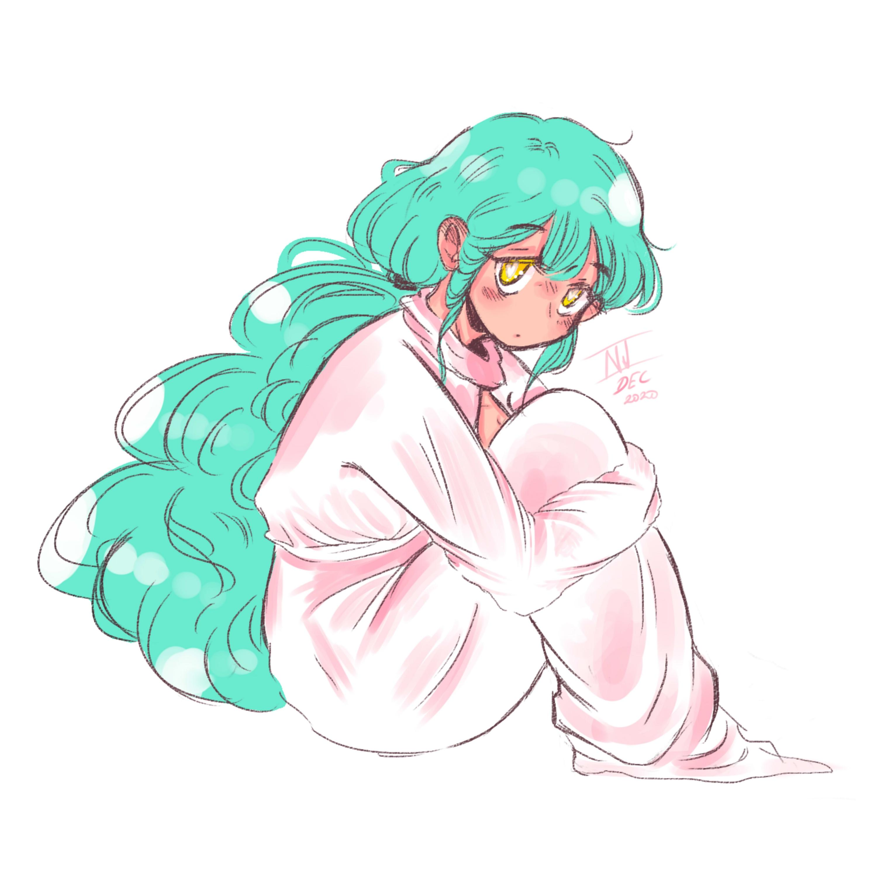
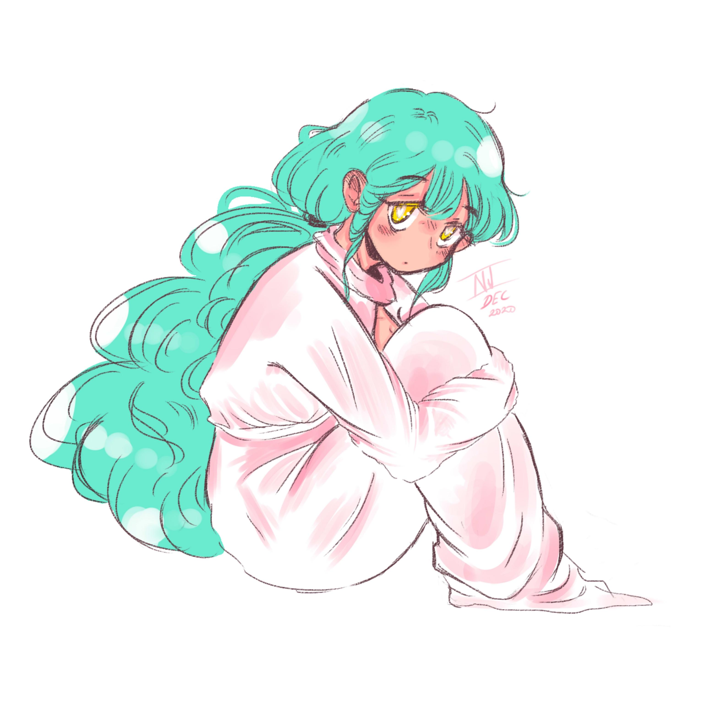

HTML & CSS
JavaScript
SQL & MySQL

Paint Tool SAI

GIMP

My name is Veronika, and I am currently striving to expand my knowledge regarding mediadesign.
In my freetime, I mostly draw digitally, play video games with friends, watch Anime, or drool over food content on YouTube and Instagram.
With this website, I'll try to give you a better understanding of who I am and what I can be capable of!

 



HTML & CSS
JavaScript
SQL & MySQL
Paint Tool SAI
GIMP
Currently, I am searching for an apprenticeship in the media-design field, while I spend my time at the Coders.Bay, where I learn about coding. I specifically enjoy web-development and web-design the most, which is why I believe that working as a media designer may be the perfect fit for me.
If you would like to learn more about me, you can always get in contact with me: